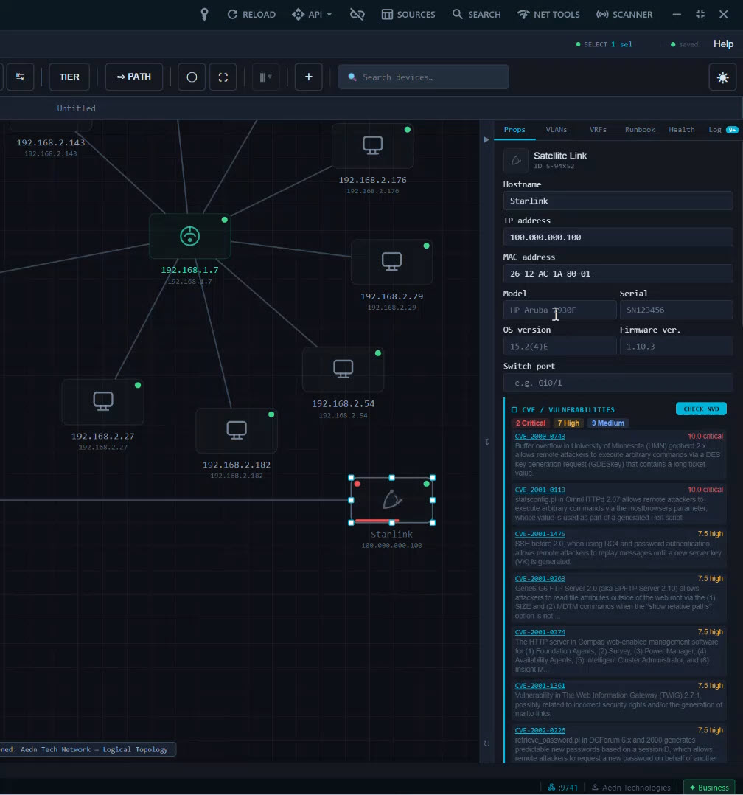
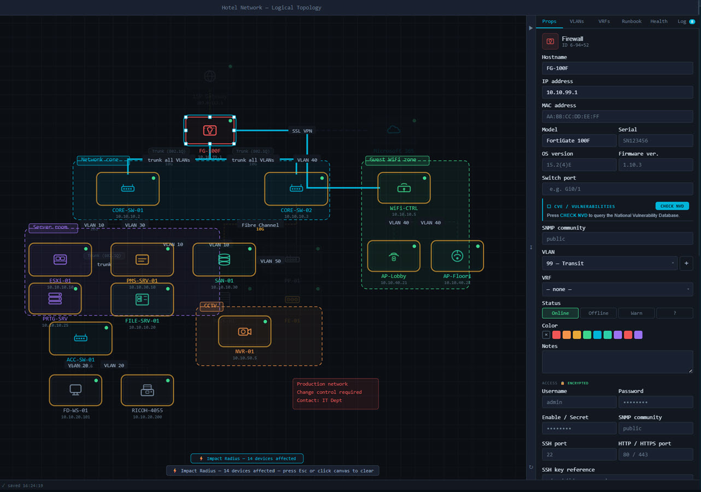
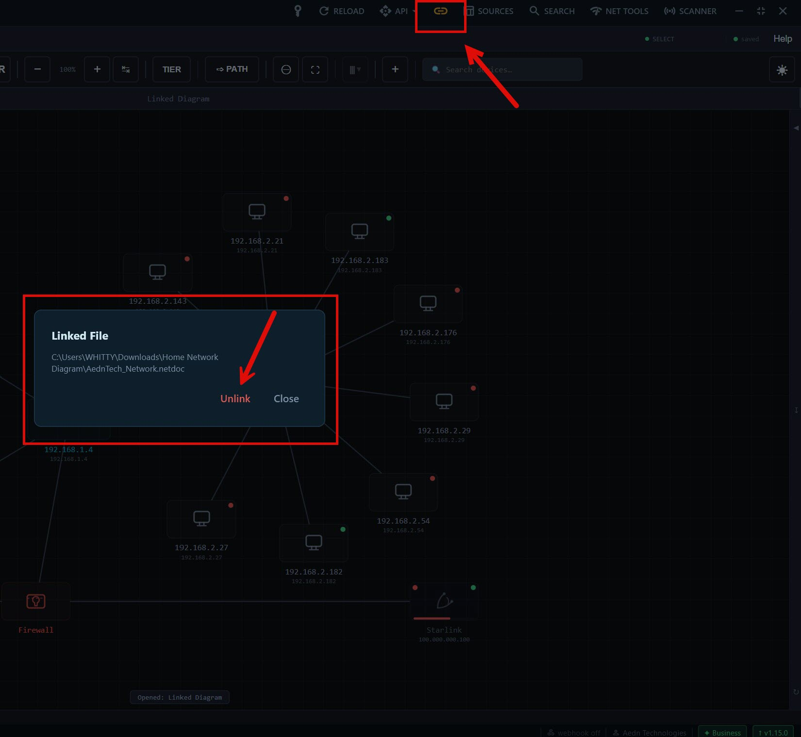

NetDoc Pro
Network documentation that actually documents your network. NetDoc Pro discovers your devices, draws the topology, and keeps it current as things change. Local-first. Windows. From $149/year.
Point NetDoc Pro at a subnet and watch your topology build itself. SNMP, LLDP, and CDP walks return verified port-level adjacency from the switches themselves — no guessing, no inference, no manual cable-drawing. Multi-vendor config import covers Cisco, Juniper, Dell, HP, Aruba, Huawei, MikroTik, FortiGate, and more — with automatic neighbour detection from the parsed configs.

Every device gets a one-click NVD check. NetDoc Pro tells you which switches, firewalls, and servers have known CVEs — red dots on the canvas, severity badges in the inventory. OS detection across SSH, SNMP, and WinRM identifies operating systems precisely and flags end-of-life equipment automatically. Impact Radius and Path Trace show you what fails when any one device goes down — answer change-planning questions in seconds, not days.

No cloud. No telemetry. No data uploaded anywhere. Credentials encrypted with Windows DPAPI. Diagrams stored as standard JSON files on your machine — back them up, version-control them, share them on your terms. The only outbound connection is licence verification and Sentry crash reporting. Built for the MSPs, IT Administrators, and healthcare IT teams who can't put client network data into someone else's cloud.

Start free, upgrade when you need full discovery, automation, or team collaboration. Per-seat pricing, with volume discounts on Business at 5+ seats.
Beta testers receive the Business tier free for 12 months in exchange for honest feedback. Prices below show what applies after the beta period.
Single /24 scan. 20 nodes per diagram, 2 pages per diagram. Full CIDR / IPv6 / VLSM calculator. Per-device CVE checks. Live device monitoring. PNG export. DrawIO and Visio import. Forever free, no card required after public launch.
Everything in Free, plus scanning at any size, 12-vendor config import, SNMP discovery, OS detection with EOL flagging, in-app SSH/Telnet/RDP/VNC, Impact Radius, Path Trace, snapshots, encrypted credentials. Perpetual at $299 one-time.
Everything in Pro, plus SNMP topology auto-build, MAC-to-port mapping, Linked Network File for teams, Global Device Search, PRTG webhook, REST API, NinjaRMM and Intune imports, Design Mode, scheduled scans, client report generator. Perpetual at $799 one-time.
All tiers require beta access during the testing period.
A network documentation tool MSPs and IT teams actually wanted. Built for one operator, scales to teams.
Unlimited recursive LLDP and CDP discovery with port-level adjacency. MAC-to-port FDB mapping across managed switches. Community string pool tries every credential in your stack until one works.
Cisco IOS / IOS-XE / NX-OS / ASA, Juniper, Dell OS9/OS10, HP/Aruba, Aruba CX, Huawei, MikroTik, FortiGate, Extreme, Brocade. Configs auto-draw neighbour cables.
In-app SSH and Telnet terminals, plus RDP and VNC launchers. Right-click any device on the canvas and connect — no separate tool needed.
Click any device and see everything that fails when it goes down. Answer change-planning questions in seconds, not days.
One-click NVD lookup with version-specific matching, plus FortiGuard PSIRT for Fortinet gear. Scheduled bulk checks across every diagram. EOL flagging against a 50+ pattern database.
Share diagrams via any UNC share or mapped drive. See who else has the file open. Get notified when someone else saves. No server, no cloud.
Capture diagram state, compare any two snapshots, see exactly what changed and when. Full audit log per device.
Three-stage host reachability — ICMP, TCP, and ARP fallback. PRTG webhook integration updates device status badges in real time. Same approach to liveness detection as enterprise monitoring tools.
Direct NinjaRMM and Microsoft Intune imports for MSPs and IT teams already using them — OAuth 2.0, conflict resolution per device, encrypted credential storage. Plus a REST API for custom automation, with PowerShell, Python, and Ansible examples on GitHub.
Native PDF generation with classification badges, executive summary, tier-grouped device inventory, and CVE tables. Branded with your logo.
Wire NetDoc Pro into your existing CSV, Excel, or YAML inventory. Auto-reload when the file changes. Recipes for ConnectWise, AD, vCenter, NetBox.
All data stays on your machine. Credentials in Windows DPAPI. No telemetry of your network. Diagrams in portable JSON — no vendor lock-in.
Full TCP and UDP scanning with service identification, banner interpretation, and CSV export. Built in, no separate tool.
Draw a planned network before it's built. Mark devices as Planned with dashed blue rings. When the build is complete, promote the design to live documentation in one click. Business tier.
Cabinet diagrams with PSU redundancy badges, floor plan overlays, port-to-port cabling across pages, audit history, and CSV import/export. Templates save and apply cabinet layouts.
Multi-diagram support is confirmed for future updates — manage Head Office, Branch A, and the data centre as separate diagrams in one tool, with shared device templates and cross-diagram search.
Beyond that, the roadmap is being shaped by what beta testers actually need. If you're running NetDoc Pro on real client networks and there's friction we haven't closed yet, tell us — the priorities for v2.0 and beyond will reflect what comes back from the beta.
NetDoc Pro is in private beta. We're looking for MSPs and in-house IT teams to run it on real client networks for 3 weeks and shape what ships next. Beta testers get Business tier free for 12 months and a direct line for support and feature requests.
Email us with a sentence about your environment — rough device count, vendor mix, primary documentation pain point — and we'll be in touch within 24 hours.
Or open an issue on our GitHub if you'd prefer to discuss publicly.